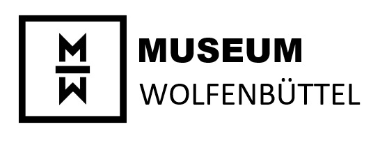

The societies and associations of the 19th century were in many ways the representatives of middle-class interests. Some of the results of this form of social participation not only shaped those times but remain present in Wolfenbüttel, such as the school in the castle, the theatre and the museum. The workers' educational association, founded in 1865, also shows an important current in the town: the workers organised and won themselves participation in society and improvement in their living conditions.
Continue with button 15
